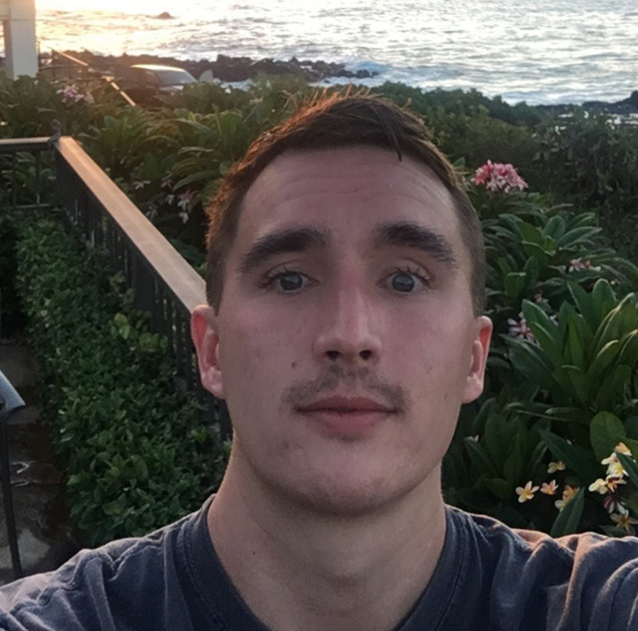

About Me
My name is Owen Geoghegan, I'm 26 years old, and was born and raised in San Diego, California. My background is in commercial insurance, however, I am currently studying to become a full-stack web developer. This page features my personal
contact information, as well as links to professional and social media, and a working portfolio of personal or group projects I have contributed to.
I have had a deep interest in computer science and web development for a number of years. Despite completing my undergraduate studies in finance, I have been left feeling unfulfilled in my current career path. My interest in web
development has led me towards a career change- I will be seeking full time employment in the tech industry following completion of my studies. For more detailed information or questions, please refer to my Linkedin or email for a
complete CV.
Connect with Me